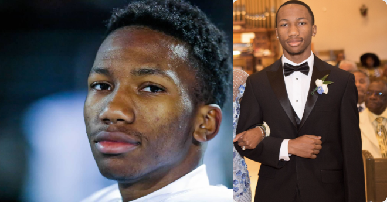

My name is Jason Harris, I am a 19 years old Junior computer science major and currently attending Michigan State University. I grew up in Southfield and West Bloomfield, Michigan. Since I was 5 I played sports all the way up until my senior year of high school. I started playing football, baseball, and track, eventually I ended up dropping baseball at around 9 and mainly focused on track and football. I love sports it was a huge part of my lifestyle. In high school I was starting find a interest in technology around my junior year. That was the same year I started peaking at my sports potentail. By the middle of Junior year of high school I decided I wanted to either be a computer science or computer engineer major, by the end of that school year I decided I was going to attend Michigan State. Senior year in the fall my football team reached the Division 1 State Championship, the furthest we've ever gone in school history. In the spring I had an idea that that track season would be the last team sport I participate in for probably the rest of my life. That season I along with 3 of my teammates broke our 4x200 meter relay school record which ended up being the 5th fastest time in the state of Michigan that year, were Oakland County Champs in that event, and runners up in the 4x400, and also qualified for the state championship meet, where we finished in the top 8 and achieved being named Division 1 All-State track athletes that season, and I was awarded "Best Team Leader" by my coaches and teammates. The follwoing fall was my freshman year at Michgan State where I decided on becoming a Computer Science Major. I finished the year on the dean's list with over a 3.5 GPA, and also that summer I landed an intership at DTE Energy. Currently I am on track to recieving a bachelor's in Computer Science and have big plans for myself in the near future.
Below is a link to my high school's track records, My name is on the boys 800 meter relay column